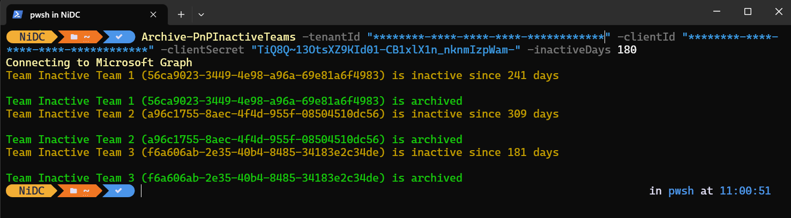

Archive inactive Teams
Summary
This function, Archive-PnPInactiveTeams, gets a list of all the inactive Teams, based on the given number of days and archives them one by one.

Implementation
Save this script to a PSM1 module file, like archive-inactiveTeams.psm1. Then import the module file with Import-Module:
Import-Module archive-inactiveTeams.psm1 -Verbose
The -Verbose switch lists the functions that are imported.
Once the module is imported the function Archive-PnPInactiveTeams will be loaded and ready to use.
<# Script to archive inactive Teams
Author: Nico De Cleyre - @nicodecleyre
Blog: https://www.nicodecleyre.com
v1.0 - 8/6/2023
#>
Function Archive-PnPInactiveTeams {
<#
.SYNOPSIS
Script to archive the inactive Teams
.Description
By inputting a designated timeframe for inactivity, the script automatically identifies Teams that have remained dormant beyond the specified period. These Teams are then archived
This solution requires an Azure App registration with the following permissions:
- Reports.Read.All
- TeamSettings.ReadWrite.All
.Parameter TenandId
The ID of your tenant
.PARAMETER ClientId
The ID of your Azure app registration
.PARAMETER ClientSecret
The secret of your Azure app registration
.PARAMETER InactiveDays
The minimum number of days that a Team must be active in order to be archived otherwise. Possible values: 7, 30, 90 or 180
.Example
Archive-PnPInactiveTeams -TenandId "XXXXXX" -ClientId "XXXXXX" -ClientSecret "XXXXXX" -InactiveDays 30
.Example
Archive-PnPInactiveTeams -TenandId "XXXXXX" -ClientId "XXXXXX" -ClientSecret "XXXXXX" -InactiveDays 180
#>
[CmdletBinding()]
param (
[Parameter(Mandatory = $true)]
$TenantId,
[Parameter(Mandatory = $true)]
$ClientId,
[Parameter(Mandatory = $true)]
$ClientSecret,
[Parameter(Mandatory = $true, ValueFromPipeline = $true)]
[ValidateSet("7", "30", "90", "180")]
$InactiveDays
)
begin {
#Log in to Microsoft Graph
Write-Host "Connecting to Microsoft Graph" -ForegroundColor Yellow
$uri = "https://login.microsoftonline.com/$TenantId/oauth2/v2.0/token"
$body = @{
client_id = $ClientId
client_secret = $ClientSecret
grant_type = "client_credentials"
scope = "https://graph.microsoft.com/.default"
}
$response = Invoke-RestMethod -Uri $uri -Method Post -Body $body
$accessToken = $response.access_token
}
process {
$today = Get-Date
# Get the Teams Team activity detail
$inactiveTeamsUri = "https://graph.microsoft.com/v1.0/reports/getTeamsTeamActivityDetail(period='D$InactiveDays')"
$inactiveTeamsHeader = @{
Authorization = "Bearer $accessToken"
}
$inactiveTeamsResponse = Invoke-RestMethod -Uri $inactiveTeamsUri -Method Get -Headers $inactiveTeamsHeader
$teams = $inactiveTeamsResponse | ConvertFrom-Csv | Where-Object { $_.'Last Activity Date' -ne "" }
foreach ($team in $teams) {
$lastActivityDate = $team.'Last Activity Date'
$timeSpan = New-TimeSpan -Start $lastActivityDate -End $today
if ($timeSpan.Days -gt $InactiveDays) {
$teamId = $team.'Team Id'
$teamName = $team.'Team Name'
Write-Host "Team $teamName ($teamId) is inactive since $($timeSpan.Days) days" -ForegroundColor DarkYellow
$archiveTeamUri = "https://graph.microsoft.com/v1.0/teams/$teamId/archive"
Invoke-RestMethod -Uri $archiveTeamUri -Method Post -Headers $inactiveTeamsHeader
Write-Host "Team $teamName ($teamId) is archived" -ForegroundColor Green
}
}
}
end {
}
}
Contributors
| Author(s) |
|---|
| Nico De Cleyre |
| Heinrich Krause |
Disclaimer
THESE SAMPLES ARE PROVIDED AS IS WITHOUT WARRANTY OF ANY KIND, EITHER EXPRESS OR IMPLIED, INCLUDING ANY IMPLIED WARRANTIES OF FITNESS FOR A PARTICULAR PURPOSE, MERCHANTABILITY, OR NON-INFRINGEMENT.